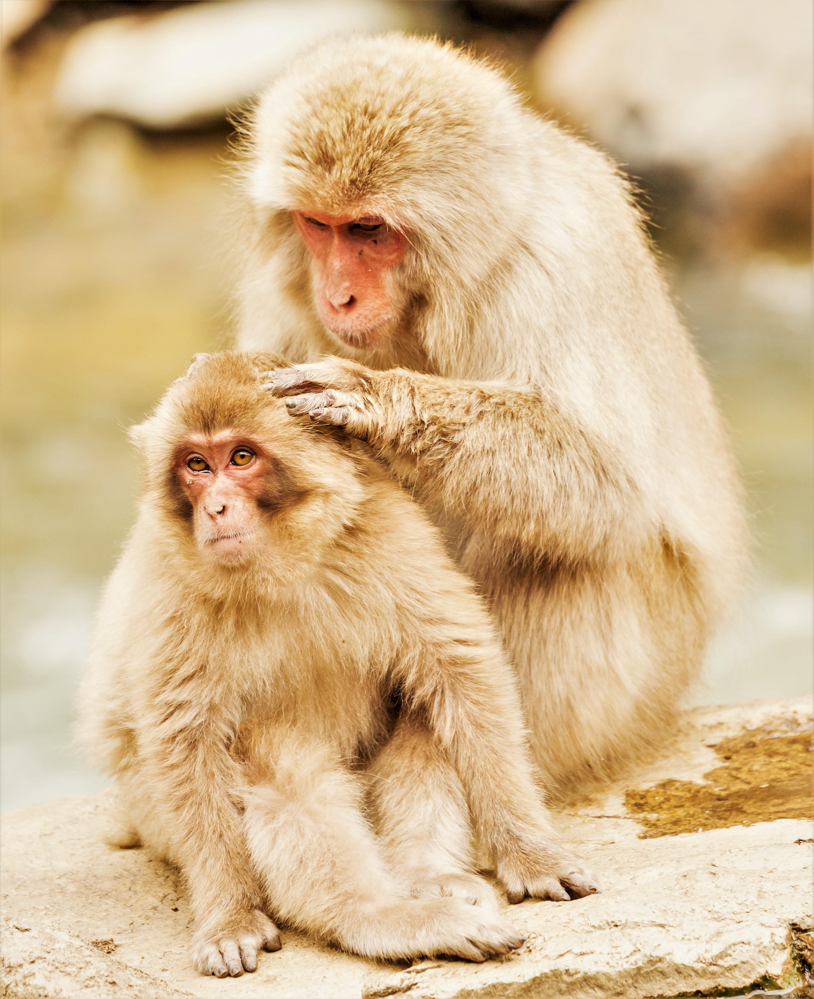

Japanese
macaque
From Wikipedia, the free encyclopedia

A Japanese macaque mother grooming her child
Conservation status
The Japanese macaque (Macaca fuscata), also known as the snow monkey, is a terrestrial Old World monkey species that is native to Japan. Colloquially, they are referred to as "snow monkeys" because some live in areas where snow covers the ground for months each year – no other non-human primate lives further north, nor in a colder climate.[3] Individuals have brownish grey fur, pinkish-red faces, and short tails. Two subspecies are known.[4]
In Japan, the species is known as Nihonzaru (ニホンザル, a combination of Nihon 日本 "Japan" + saru 猿 "monkey") to distinguish it from other primates, but the Japanese macaque is very familiar in Japan — as it’s the only species of monkey in Japan — so when Japanese people simply say saru, they usually have the Japanese macaque in mind.